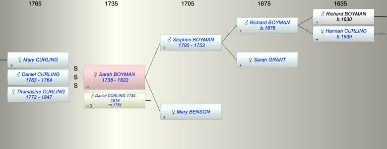

| [Index] |
| Sarah BOYMAN (1738 - 1822) |
|  |
| b. 1738 at St Lawrence |
| m. 20 Dec 1781 Daniel CURLING (1730 - 1818) at St Laurence |
| d. 1822 at St Lawrence aged 84 |
| Parents: |
| Stephen BOYMAN (1705 - 1753) |
| Mary BENSON |
| Events in Sarah BOYMAN (1738 - 1822)'s life | |||||
| Date | Age | Event | Place | Notes | Src |
| 1738 | Sarah BOYMAN was born | St Lawrence | Note 1 | ||
| 1753 | 15 | Death of father Stephen BOYMAN (aged 48) | |||
| 1764 | 26 | Death of step son Daniel CURLING (aged 1) | St Laurence | Note 2 | |
| 20 Dec 1781 | 43 | Married Daniel CURLING (aged 51) | St Laurence | Note 3 | |
| 01 Aug 1818 | 80 | Death of husband Daniel CURLING (aged 88) | St Laurence | Note 4 | |
| 1822 | 84 | Sarah BOYMAN died | St Lawrence | posssible buried St L aged 84 | |
| Personal Notes: |
| died without issue |
| Created on a Mac™ using iFamily for Mac™ on 8 Oct 2023 |